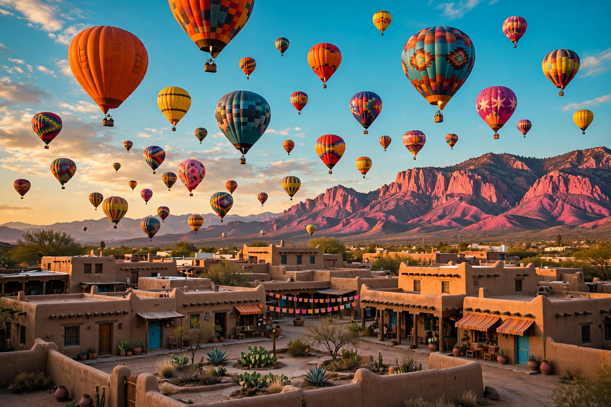

Albuquerque, New Mexico
Albuquerque (pronounced /ˈælbəkɜːrki/ AL-bə-kur-kee) is the most populous city in the U.S. state of New Mexico and the seat of Bernalillo County. Located in the north-central part of the state in the Albuquerque Basin, it straddles the Rio Grande at the foot of the Sandia Mountains. Its population was 564,559 at the 2020 census, making it the 32nd-most populous city in the United States. The city is nicknamed "the Duke City" and sometimes abbreviated "ABQ".

| Albuquerque | |
|---|---|
| Country | United States |
| State | New Mexico |
| Founded | 1706 (as a Spanish colonial villa) |
| Elevation | 1,619 m (5,312 ft) |
| Population (2020) | 564,559 |
| Demonym | Albuquerquean / Burqueño |
History
The area was inhabited for centuries by Pueblo peoples along the Rio Grande. In 1706 the Spanish founded the Villa de Alburquerque, named for the Duke of Alburquerque, viceroy of New Spain (the first "r" was later dropped). The historic Old Town preserves the original plaza and the San Felipe de Neri Church. Albuquerque grew rapidly after the railroad arrived in 1880 and again after the Second World War, when Kirtland Air Force Base and Sandia National Laboratories made it a major center for research and defense; historic Route 66 also runs through the city along Central Avenue.
Geography and culture
Albuquerque sits at a high elevation with a cold desert climate — hot summers, mild winters, and intense sun. The Sandia Peak Tramway carries passengers from the city's eastern edge to the crest of the Sandias. Each October the city hosts the Albuquerque International Balloon Fiesta, the largest hot-air balloon festival in the world. The bimodal Hispanic and Native American heritage of the region is visible in its cuisine (notably the state question, "Red or green?" — referring to chile sauce), adobe architecture, and the nearby pueblos.
Economy
The economy is anchored by federal laboratories and the military, the University of New Mexico, Presbyterian Healthcare Services, and a growing film and technology sector.
Categories: Cities in New Mexico · County seats in New Mexico · 1706 establishments in the Spanish Empire